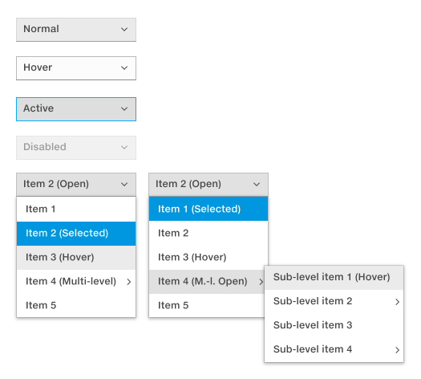
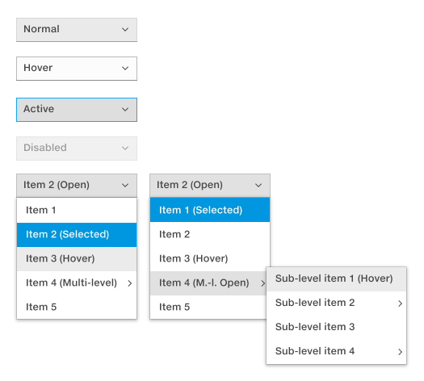
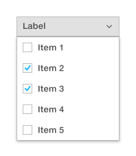

Drop-down lists
Drop-down lists are used to make a single selection from a limited number of items. Since the choices are hidden, this control should only be used when the drop-down content is predictable for the user.
Selectors are used when you want users to be able to select one or multiple items from a given list.
Drop-down lists are used to make a single selection from a limited number of items. Since the choices are hidden, this control should only be used when the drop-down content is predictable for the user.
Checkboxes in the drop-down allow the user to select multiple items at a time. Keep this list short.
Toggle buttons allow the user to change a setting between two or more states. Only one is selected at a time. Default toggle buttons are styled as regular buttons. In cases where you would like to draw special attention to the selected state, the enhanced toggle button may be used.
Multi-select toggle buttons allow the user to turn settings/properties on or off. Multiple buttons may be selected at the same time.
Use when you want the user to select 0 or more options from a predefined list.
Use when you want the user to select just 1 option from a list.
Use when you want the user to toggle between 2 unambiguous choices, like On/Off or Yes/No.
Basic sliders work best when the specific value does not matter to the user, but an approximate value is good enough.
0 100
0 1000